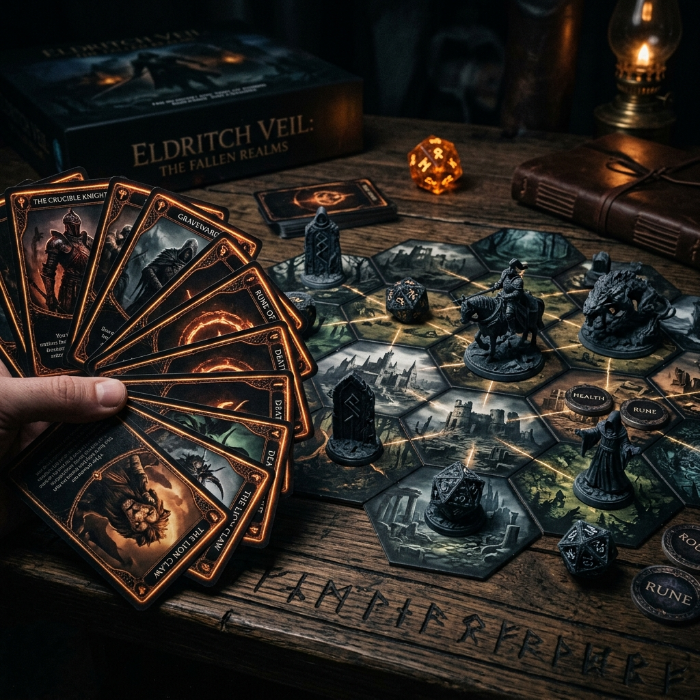
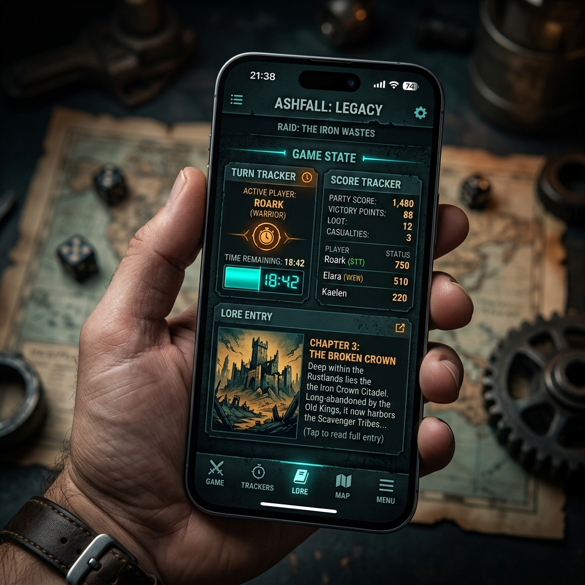

Il Progetto
Fractured Aeon è un progetto originale firmato Ziodan Workshop: un gioco che nasce dall'incontro tra prototipazione fisica, sviluppo software e voglia di creare esperienze fuori dagli schemi. È il nostro modo di trasformare idee, oggetti e interazione digitale in un'unica avventura accessibile, coinvolgente e pensata per essere condivisa.
Prototipazione 3D
Componenti fisici stampati in 3D
Sviluppo Software
App companion Aeon
Gioco e Intrattenimento
Esperienza phygital per tutti
Come Si Gioca
Scegli il tuo personaggio
Ogni eroe ha capacità e stile di gioco diversi. Parti da quello che senti più tuo.
Costruisci il tuo mazzo
Combina carte, effetti e strategie per creare una partita sempre diversa.
Gioca il tuo turno
Muoviti, attiva abilità e reagisci agli avversari con regole semplici da imparare.
Fisico + Digitale

Carte, token e moduli di gioco danno forma a un tavolo vivo, tattile e immediato.

L'app Aeon Companion rende l'esperienza più fluida, tiene traccia dei progressi e accompagna ogni partita.
Vuoi portare Fractured Aeon al tuo evento?
Scopri come inserirlo in una serata, una demo o un format live firmato Ziodan Workshop.
Vai alla sezione Eventi